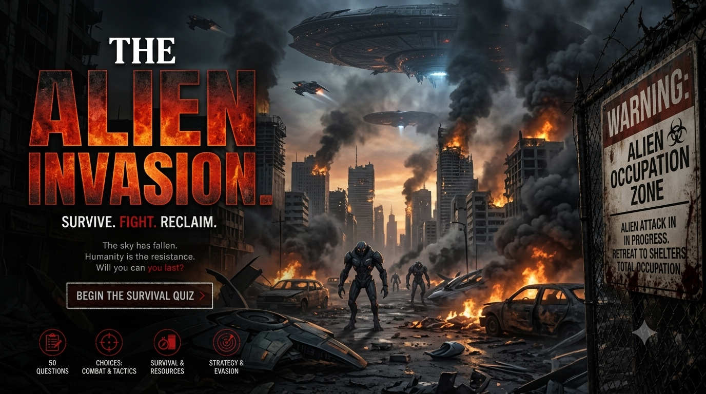

Alien Invasion Survival Quiz
Face 50 difficult decisions during a fictional alien invasion involving first contact, hostile encounters, hiding, evacuation, mysterious technology, limited resources, trust and resistance. Discover your survival decision score and how your choices reflect compassion and ethical judgment.
Choose carefully. Your survival decision score and compassion-and-ethics score are calculated separately. Every decision could change your chances of surviving the invasion.
This is a fictional alien-invasion survival experience. Your result is based entirely on the choices you make during the quiz. Alien capabilities and events described in the scenarios are fictional.


About the Alien Invasion Survival Quiz
The Alien Invasion Survival Quiz is a 50-decision fictional survival challenge set during a mysterious extraterrestrial invasion. As the situation develops, you must make difficult choices involving first contact, alien intentions, hiding, evacuation, unfamiliar technology, essential resources and other survivors.
The quiz explores more than surviving the first encounter. Early decisions may involve observing unfamiliar visitors, assessing threats and avoiding unnecessary risks. Later situations introduce infiltration, uncertain alliances, resistance, difficult moral choices and the challenge of adapting to an enemy whose capabilities may be poorly understood.
Your choices contribute to a Survival Score, while certain decisions also contribute to a separate Compassion & Ethics Score. These scores explore different aspects of decision-making: practical survival priorities, compassion, fairness, trust and ethical judgment under pressure.
The invasion, alien technology and scoring system are fictional. The quiz is intended for entertainment and general discussion of decision-making under uncertainty, not as a prediction of how someone would behave during a real emergency.
What This Quiz Covers
The 50 decisions cover different problems that might arise during a fictional alien invasion. Some situations involve immediate danger, while others focus on interpreting unfamiliar behaviour, protecting resources and deciding whom to trust.
First Contact and Alien Intentions
Early scenarios explore how to respond to unfamiliar visitors, mysterious messages and apparent offers of assistance. You must decide how to evaluate uncertain intentions without assuming that every encounter is either peaceful or hostile.
Stealth, Hiding and Escape
Some decisions involve finding places to hide, avoiding detection, choosing escape routes and deciding when movement is worth the risk. These scenarios focus on observation, caution and adapting to changing threats.
Invasion and Evacuation
Other situations explore how to respond as an invasion spreads, public services become unreliable and familiar locations may no longer be safe. You must weigh the risks of staying, relocating, helping others and travelling through uncertain environments.
Alien Technology and Unknown Hazards
The quiz includes fictional encounters with unfamiliar devices, strange signals, unknown materials and potentially dangerous alien technology. These decisions examine whether curiosity is worth the risk and why unfamiliar hazards should not automatically be assumed harmless.
Alien Weaknesses and Adaptation
Some scenarios involve observing alien behaviour, looking for patterns and adapting when an initial strategy fails. The challenge is to distinguish useful evidence from assumptions and avoid taking unnecessary risks based on an untested theory.
Essential Resources
Food, water, shelter, medicine, communication equipment and other supplies may become difficult to obtain during a major fictional crisis. These situations explore resource management, preparation and the consequences of choices that affect your long-term options.
Trust, Infiltration and Collaboration
Not everyone you encounter will necessarily be who they claim to be, and not every unfamiliar person should automatically be treated as a threat. Some decisions involve checking information, evaluating suspicious behaviour, cooperating with other survivors and managing the risks of infiltration.
Compassion, Ethics and Difficult Choices
Certain decisions contribute to a separate Compassion & Ethics Score. These scenarios explore fairness, responsibility, cooperation, trust and the willingness to help others while considering the practical risks of an uncertain invasion.
Resistance and Endgame Decisions
Later situations focus on resistance, coordination, long-term survival and decisions that could affect the future of the remaining survivors. You must consider when to act, when to wait, how to manage uncertainty and whether a risky opportunity is worth pursuing.
How the Quiz Works
The complete quiz contains 50 fictional survival decisions. Every decision presents four possible choices. Read the situation carefully and select the option you believe gives you the best outcome within the scenario.
The questions may appear in a randomized order. Answer choices can also be shuffled, so the position of an option should not be treated as an indication of whether it is the best choice.
Each decision can contribute to your Survival Score. Some decisions also contain a separate compassion and ethics component. The two scores are calculated independently so that survival-oriented choices and ethical choices can be represented separately.
A choice that improves survival does not necessarily represent the most compassionate decision. Likewise, a compassionate decision is not necessarily the safest option in every fictional situation.
Your final result includes a decision profile based on your quiz score. It describes your choices within the fictional scenarios rather than predicting your actual behaviour or guaranteeing survival in a real emergency.
Quiz Navigation
Starting the Quiz
Select START QUIZ on the opening screen to begin. Your first alien-invasion survival decision will appear with four possible choices.
Choosing an Answer
Read the complete situation and all four choices before deciding. Consider the immediate danger, the reliability of the available information and the possible consequences of your choice.
Moving Between Decisions
Use NEXT to continue through the quiz. The BACK button allows you to return to an earlier decision and reconsider your previous choice before submitting the quiz.
Completing the Quiz
Continue until all 50 decisions have been completed. When you are finished, select SUBMIT to calculate your Survival Score, Compassion & Ethics Score, decision profile and final descriptions.
Trying Again
After seeing your result, select TRY AGAIN to replay the quiz and make different decisions. You can also use SHARE MY RESULT or CHALLENGE SOMEONE to share your result with other players.
Frequently Asked Questions
How many decisions are in the quiz?
There are 50 fictional survival decisions, and every decision provides four possible choices.
What does the Survival Score measure?
The Survival Score represents how effectively your decisions address the fictional survival challenges presented throughout the quiz. A higher score indicates stronger overall survival decision-making within the scenarios.
What is the Compassion & Ethics Score?
The Compassion & Ethics Score reflects choices involving factors such as compassion, fairness, trust and responsibility. It is calculated separately from the Survival Score and represents performance within this fictional quiz, not an objective judgment of someone's character.
Can I have a high Survival Score and a lower Compassion & Ethics Score?
Yes. The two scores measure different aspects of your decisions. A choice that improves your chances of survival does not necessarily represent the most compassionate or fair decision.
Are the aliens peaceful or hostile?
The quiz presents a range of fictional encounters and uncertain situations. You must assess the available evidence and decide how to respond rather than assume every alien encounter has the same intentions or level of danger.
Should I trust an alien message offering help?
The quiz challenges you to consider the reliability of information, the possibility of deception and the risks of acting on unverified claims. The best decision depends on the details of the fictional scenario and the options available.
Does the quiz include alien technology?
Yes. Some fictional scenarios involve unfamiliar devices, signals, materials and other forms of alien technology. These questions explore how you respond to unknown hazards and incomplete information.
Does the quiz cover hiding and evacuation?
Yes. Several scenarios involve avoiding detection, evaluating escape routes, relocating when necessary and deciding whether movement or remaining in place offers the better chance of survival in the situation.
Are the alien weaknesses real?
No. Any alien capabilities, vulnerabilities or adaptation patterns in the quiz belong to its fictional scenarios. There is no verified universal set of weaknesses for hypothetical extraterrestrial invaders.
Does the quiz provide real emergency instructions?
No. This is a fictional entertainment experience. Its scenarios and scoring are not official emergency guidance. For real emergencies, follow instructions from the appropriate emergency-management and public safety authorities.
Can I change my answers?
Yes. You can use the BACK button to return to earlier decisions and reconsider your choices before submitting the quiz.
Can I take the quiz again?
Yes. Select TRY AGAIN after receiving your result to restart the quiz and experiment with different decisions.
Can I challenge my friends?
Yes. After completing the quiz, use CHALLENGE SOMEONE to share the challenge and compare your decision profiles with other players.